Reward function.
How to design reward functions to obtain expected controller performance?
Input and output.
What can you measure and what can you control?
Modelling.
simuation fidelity (rigid-body dynamics and actuator dynamics); dynamics randomization
Training.
parallel differentiable simulation; curriculum; teacher and student
Learning algorithm.
PPO etc.
Network design.
Case study: Anymal
Qradruped Robot: Traditional Controller Design
Goal: valid gait patterns (contact sequences) and commanded velocity tracking.
Controller: planning and tracking.
Trajectory optimization for a complex rigid-body model with many unspecified contact points is beyond the capabilities of current optimization techniques. Approximations are needed to reduce complexity.
Goal: commanded velocity tracking and recovery from a fall.
Modelling[Raisim]: rigid-body dynamics algorithms $O(n)$ + collision-detection library $O(n^2)$ + contact solver ($O(n)$ if not coupled) + actuator dynamics
Challenge: motors (SEAs) are hard to model.
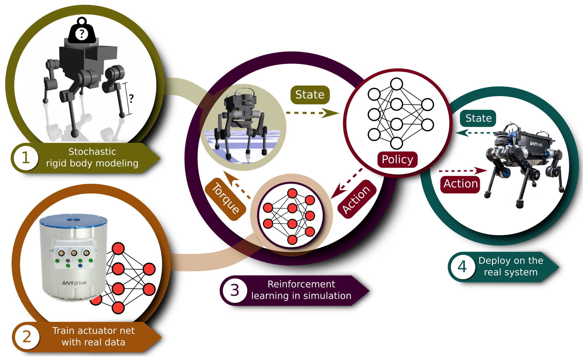
Anymal: Control and State Estimation of Motors
Actuator network:
input: joint state history (including joint velocity and joint position error), which consists of the current state and 2 past states that correspond to $t-0.01$ and $t-0.02$ s.
the length of the history should be sufficiently longer than the sum of all communication delays and the mechanical responce time.
output: joint torque
architecture: an MLP with 3 hidden layers of 32 units each; softsign activation function (12.2 $\mu$s) instead of tanh (31.6$\mu$s).
Dataset: the excitation must cover a wide range of frequency spectra.
Foot trajectories in the form of a sine wavewith varied amplitude (5 to 10 cm) and frequency (1 to 25 Hz).
Constant contact with the ground.
The robot is disturbed manually.
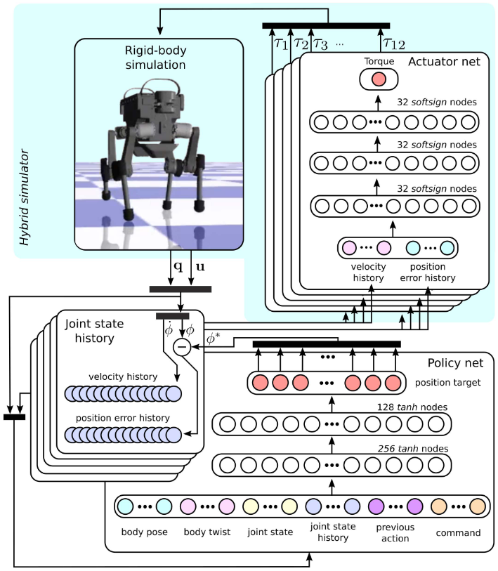
Anymal: Control and State Estimation of Motors
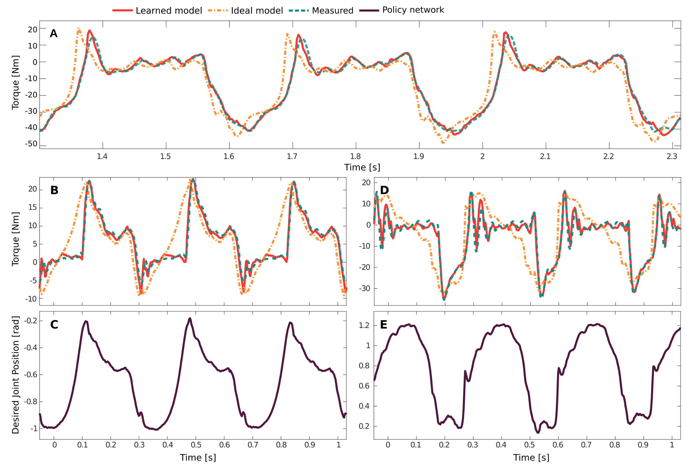
Anymal: Policy
Hyrbid simulator:
nearly 50 000 time steps per second (half of the run time is used to evaluate the actuator nets)
Body twists $\Phi^g$ (direction of the gravity vector in the IMU frame);
height, linear and angular veclocities of the base; joint angles, velocities;
joint state history $\Theta$ sparsely sampled at $t_k-0.01$ s to $t_k-0.002$ s; (enabling contact detection, which could be replaced by force sensors)
previous action; command $C$.
output: joint position target (why not torques or velocities?)
architecture: an MLP with two hidden layers, with 256 and 128 units each and tanh nonlinearity (bounded activation functions yield less aggressive trajectories for real robots when subjected disturbances)
Learning Locomotion Skills: Does the Choice of Action Space Matter?[Peng2017]
Reward: a weighted sum of terms ($r_{pos},r_{vel}, r_{end},r_{root},r_{com}$) that encourge the policy to track a reference motion
Actuation model:
target joint angles with given $k_p$ and $k_d$;
target joint velocities with given $k_d$;
torques;
muscle activations.
A PD controller can outperform a torque controller in both training speed and final control performance.
Explanation:
Smoother learning curve.
A PD controller starts as a standing controller while a torque controller doesn't.
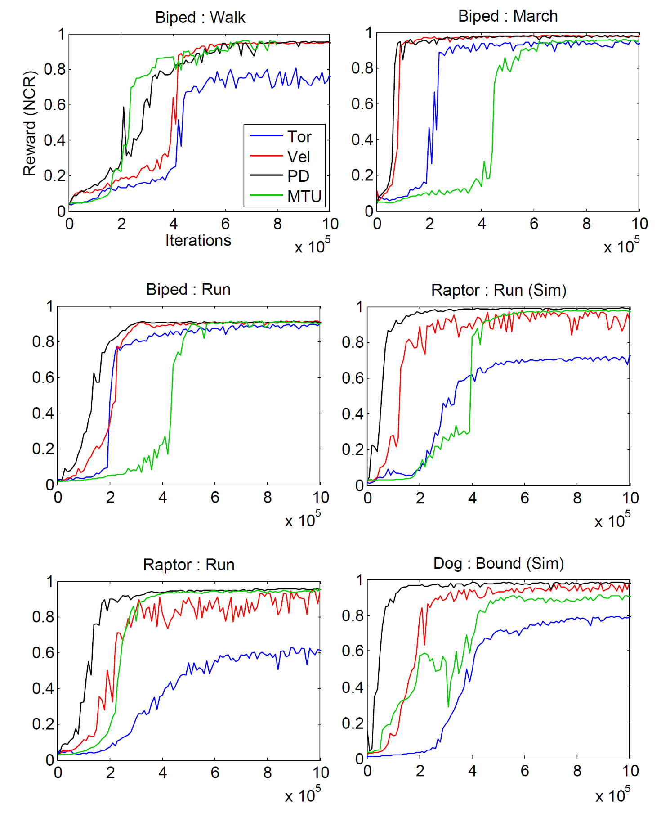
Anymal: Training
Learning algorithm: Trust Region Policy Optimization.
Curriculum: avoid trapping in a local minimum of penalty on joint torque and velocity
all of cost terms except those related to the objective (base velocity error cost etc.) are multiplied by a curriculum factor $k_c$, where $k_{c, j+1}\leftarrow (k_{c, j})^{k_d}$ and $k_0, k_d\in (0, 1)$ are selected to prevent the initial tendency to stand still.
The discount factor $\gamma$ is hand-tuned.
Joint velocities, base velocities: uniformly distributed noise injection
Training time: 9 days of simulated time for command-conditioned locomotion; 79 days for recovery from a fall.
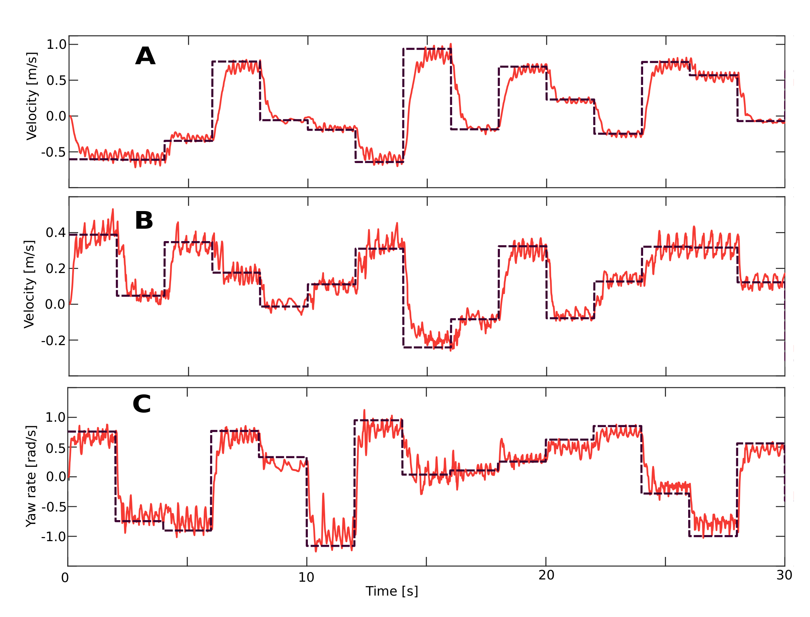
Anymal: Reward Setting
angular velocity and linear velocity of the base cost
$$
c_wK(|\omega_{IB}^I-\hat\omega_{IB}^I|), c_w=-6\Delta t
$$
torque cost, joint speed cost
$$
k_cc_\tau\|\tau\|^2, c_\tau=0.005\Delta t
$$
Inference takes 25$\mu$s on a single CPU thread (Intel i7-5600U, 2.6–3.2GHz, dual-core 64-bit, Tensorflow C++ API is used), less than 0.25% of the available onboard computational resources.
The policy network is evaluated at 200Hz for command-conditioned locomotion and at 100 Hz for recovery from a fall.
The performance is insensative to the control rate: performance is identical for recovery when the control rate increases from 20 Hz to 100 Hz. (Possibly due to the low joint velocities mostly below 6 rad/s)
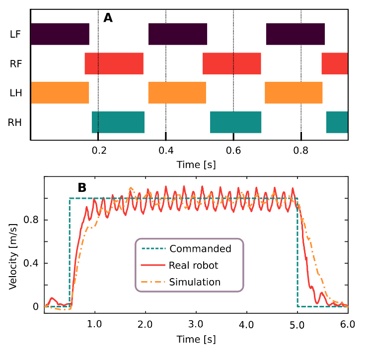
Anymal - Learning Locomotion over Challenging Terrain[Lee2020]
Goal: follow a command (direction) and locomote over rough terrain with only proprioceptive measurements (joint encoders and an IMU).
Challenge: the robustness of the controller.
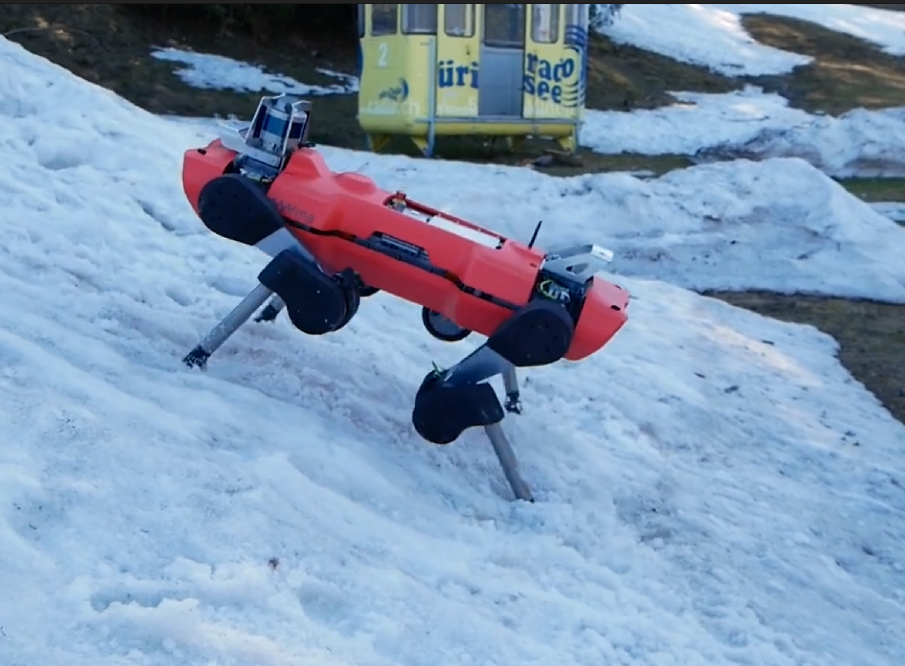
Anymal - Learning Locomotion over Challenging Terrain: Policy
Privileged learning
teacher policy (access to ground-truth knowledge)
state $s_t=(o_t, x_t)$
$o_t$ includes command, orientation, base twist, joint positions and velocities, periodic phase $\phi_i$, frequency offset $f_i$ of each leg, previous foot position targets, joint position errors and velocities at $t-0.01$ and $t-0.02$ s.
$x_t$ contains noiseless information from the physics engine, mainly related to foot-ground interactions, such as terrain profile (9 points placed along a 10-cm radius circle), foot contact state and forces, friction coefficients, external disturbance forces.
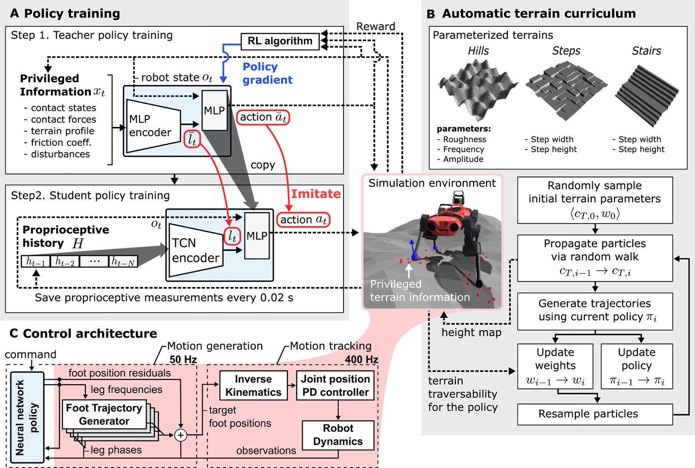
Anymal - Learning Locomotion over Challenging Terrain: Policy
Privileged learning
teacher policy (access to ground-truth knowledge)
action: 16-dim vector (leg frequencies $f_i$ and foot position residuals $\Delta r_{fi, T}$)
$\phi_i=\phi_{i,0}+(f_0+f_i)t$: contact phase if $\phi\in[0, \pi)$ and swing phase if $\phi\in[\pi, 2\pi)$, where $f_0=1.25$ Hz.
architecture: MLP encoder with input $x_t$ and MLP for computing action
Learning algorithm: TRPO
Anymal - Learning Locomotion over Challenging Terrain: Policy
Privileged learning
student policy (only uses sensors avaliable on the real robot; imitates the teacher)
state $s_t=(o_t)$
architecture: a temporal convolutional network (TCN) encoder and an MLP for computing action
Learning algorithm: supervised learning with a loss function
$$
\begin{aligned}
L=&{\color{var(--myred)}(\bar a_t(o_t, x_t)-a_t(o_t, H))^2}+\\
&{\color{var(--myblue)}(\bar l_t(o_t,x_t)-l_t(H))^2},
\end{aligned}
$$
where $H=\{h_{t-1},\cdots,h_{t-N-1}\}$ and $h_t=o_t\setminus\{f_0, \textrm{joint history, previous foot position targets}\}$ is a time series of proprioceptive observations.
Anymal - Learning Locomotion over Challenging Terrain: Policy
Adaptive terrain curriculum
The terrain is generated by a vector $c_T$.
Evaluate by the traversability of generated terrains
$$
\begin{aligned}
&v(s_t, a_t, s_{t+1})=1, \textrm{if}\ v_{pr}(s_{t+1})>0.2,\\
&Tr(c_T,\pi)=\mathbb{E}_{\xi\sim\pi}\{v(s_t,a_t,s_{t+1}|c_T\}\in[0, 1],\\
&Td(c_T,\pi)\triangleq \textrm{Pr}(Tr(c_T,\pi)\in[0.5, 0.9])
\end{aligned}
$$
Sequential importance resampling particle filter
Anymal - Learning Locomotion over Challenging Terrain: Policy
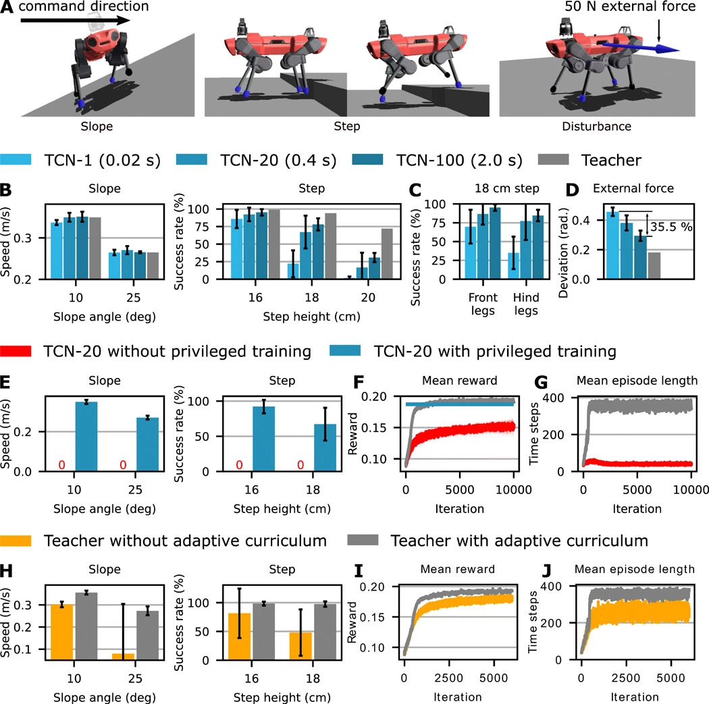
Anymal - Learning Locomotion over Challenging Terrain: Reward Setting and Training
Linear velocity; angular velocity; base motion; foot clearance; body collision; smoothness of target foot positions; torque penalty
$$
0.05r_{lv}+0.05r_{av}+0.04r_b+0.01r_{fc}+0.02r_{bc}+0.025r_s+2\cdot 10^{-5}r_\tau,
$$
Training: 12 hours for teacher policy and 4 hours for student policy (i7-8700K CPU and RTX 2080 GPU)
Training environment features only rigid terrain, while the controller successfully meet the diversity of field conditions.
Mini Cheetah
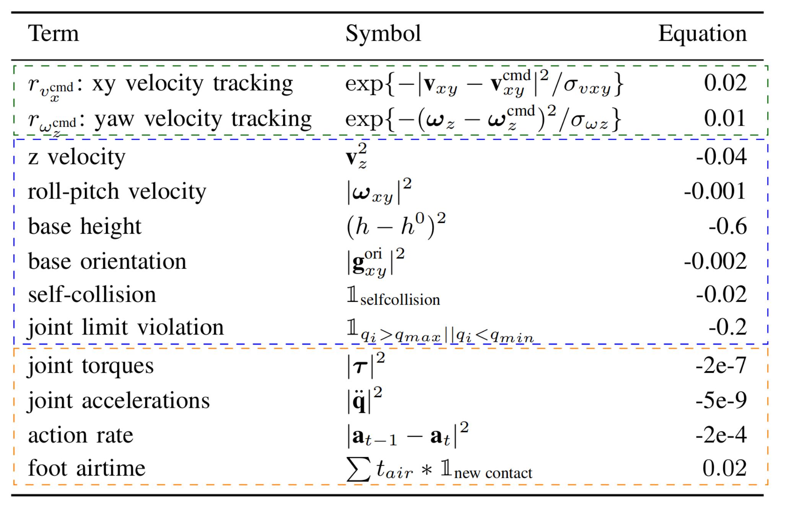
Cassie: Bipedal Gait Learning
Goal: learn all common gaits.
Challenge: the reward function is hard to design
track trajectory motion: deriving feasible reference trajectories is hard
reference-free reward: inefficient, infeasible or unsafe policies.
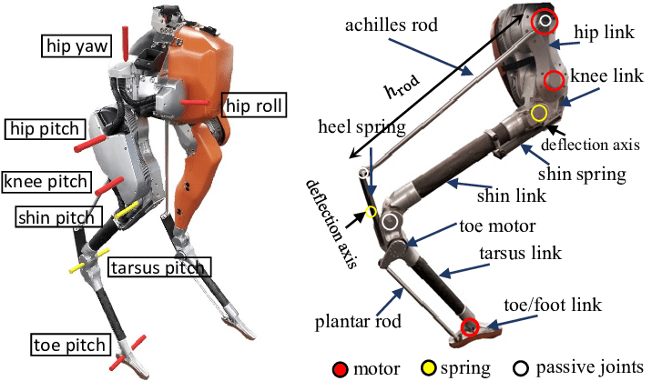
Cassie: Bipedal Gait Learning
Gait: a sequence of periodic swing phases and stance phases.
Bahavior reward: biased sum of $n$ reward components
$$
\begin{aligned}
R(s,\phi)&=\sum_i R_i(s, \phi)\\
R_i(s,\phi)&=c_i\cdot I_i(\phi)\cdot q_i(s),
\end{aligned}
$$
where $\phi\in[0, 1]$ denotes the cycle time; $I_i(\phi)$ is a binary-valued random variable denoting whether the target phase is active; $q_i(s)$ is the reward (e.g. norm of a foot force)
$$
P(I_i(\phi)=x)=\left\{
\begin{aligned}
&P(A_i<\phi< B_i) \quad \textrm{if}\ x=1 \\
&1-P(A_i<\phi< B_i) \quad \textrm{if}\ x=0 \\
\end{aligned}
\right.
$$
where $A_i\sim \Phi(2\pi a_i,\kappa), B_i\sim\Phi(2\pi b_i,\kappa)$ and $\Phi$ is the Von Mises distribution (approximation of the wrapped Normal distribution).
Reward: bipedal bahavior, smooth terms and penalization of control inputs
$$
\mathbb{E}[R(s,\phi)]=\mathbb{E}[R_{bipedal}(s,\phi)]+R_{smooth}(s)+R_{cmd}(s)
$$
$$
\begin{aligned}
\mathbb{E}[R_{bipedal}(s,\phi)]&=\mathbb{E}[C_{frc}(\phi+\theta_{left})]\cdot q_{left\ frc}(s)+\cdots\\
&+\mathbb{E}[C_{spd}(\phi+\theta_{left})]\cdot q_{left\ spd}(s)+\cdots,
\end{aligned}
$$
where $\theta_{left}$ and $\theta_{right}$ define the phases.
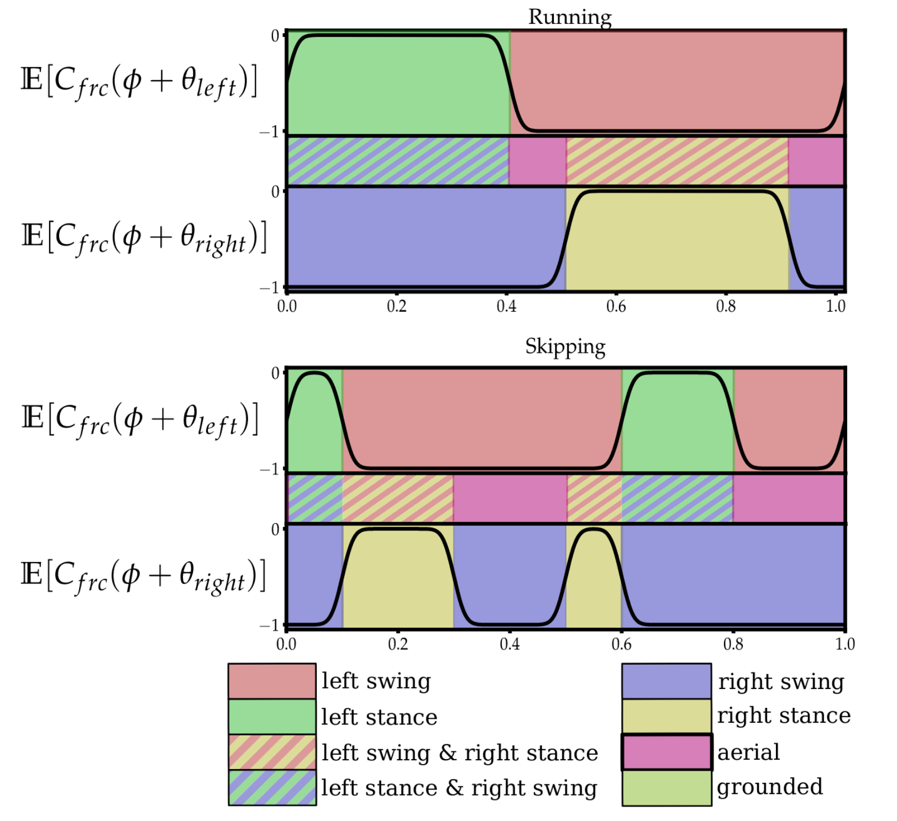
Cassie: Bipedal Gait Learning
Keep the cycle offsets fixed and vary the phase ratio: transition from walking to running and hopping with more or less time in the air.
Vary both the cycle offsets and the phase ratio: introduce additional reward (behavior-specific transition penalities).
Hopping: commanded when cycle offsets are very close; cost for constraining the feet positions to be close
$$
q_{hop\ sym}(s)=1-\exp(-err_{sym}\exp(-5|\sin(2\pi(\theta_{left}-\theta_{right})|)).
$$
Architecture: LSTM with 2 recurrent hidden layers of size 128 each and a simple linear output projection of size 30.
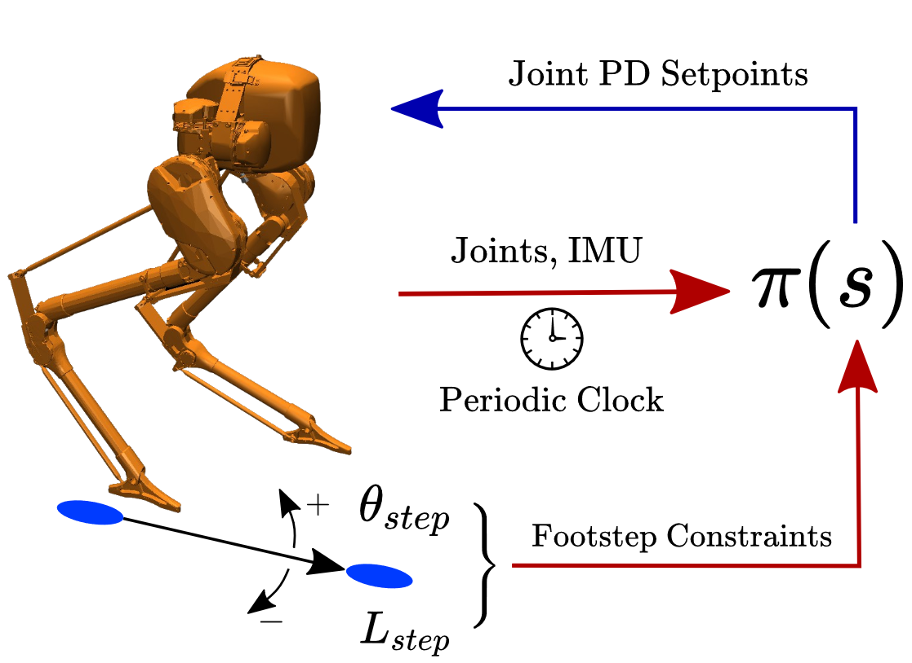
Cassie: Footstep-Constrained Walking - Reward
Reward at two time scales:
locomotion: at every decision circle
$$
r_{pelvis}=100(\Delta d^i-\Delta d^{i-1})
$$
footstep-constraint: only at touchdown moment
$$
r_{step}=\exp(-2f),
$$
where $f$ is the Euclidean distance between the actual and target footstep locations.
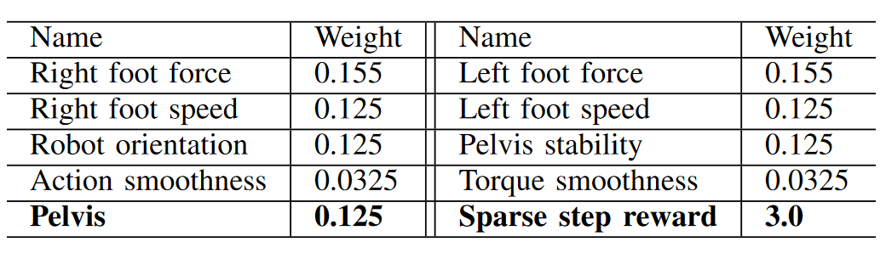
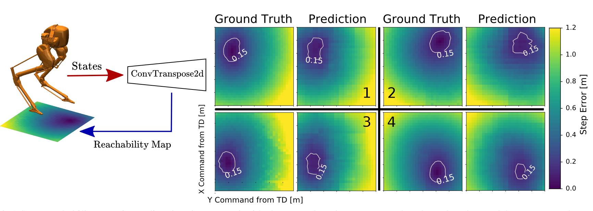
Conclusion
Conclusion
CONCLUSION
Reward function.
Characterization without loss of generality: exploitation of periodicity
Input and output.
Task space or joint space; position, velocity or torque command?
Training.
curriculum (naive version or adaptive version); teacher and student; parallel differentiable simulation [Rudin2021, Margolis2022]
Learning algorithm.
PPO etc.
Network design.
Thanks!
Bibliography
Bibliography
[Zhao2020]Zhao, Wenshuai, Jorge Peña Queralta, and Tomi Westerlund. "Sim-to-real transfer in deep reinforcement learning for robotics: a survey." 2020 IEEE Symposium Series on Computational Intelligence (SSCI). IEEE, 2020.
[Peng2017]Peng, Xue Bin, and Michiel van de Panne. "Learning locomotion skills using deeprl: Does the choice of action space matter?." Proceedings of the ACM SIGGRAPH/Eurographics Symposium on Computer Animation. 2017.
[Lee2020]Lee, Joonho, et al. "Learning quadrupedal locomotion over challenging terrain." Science robotics 5.47 (2020): eabc5986
[Hurst2021]Siekmann, Jonah, et al. "Sim-to-real learning of all common bipedal gaits via periodic reward composition." 2021 IEEE International Conference on Robotics and Automation (ICRA). IEEE, 2021
[Duan2022]Duan, Helei, et al. "Sim-to-Real Learning of Footstep-Constrained Bipedal Dynamic Walking." arXiv preprint arXiv:2203.07589 (2022)
[Dao2022]J. Dao, K. Green, H. Duan, A. Fern and J. Hurst, "Sim-to-Real Learning for Bipedal Locomotion Under Unsensed Dynamic Loads," 2022 International Conference on Robotics and Automation (ICRA), 2022, pp. 10449-10455
[Rudin2021]Nikita Rudin, David Hoeller, Philipp Reist, and Marco Hutter. Learning to walk in minutes using massively parallel deep reinforcement learning. In Proc. Conf. Robot Learn. (CoRL), pages 91–100, London, UK, November 2021
[Margolis2022]Margolis, Gabriel B., et al. "Rapid Locomotion via Reinforcement Learning." arXiv preprint arXiv:2205.02824 (2022)